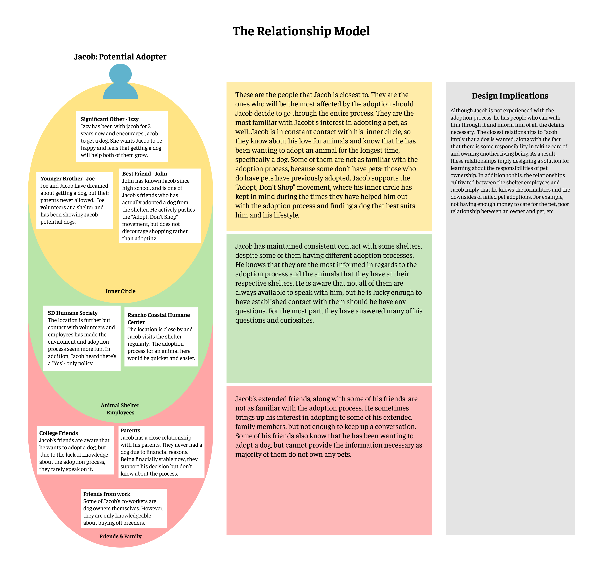
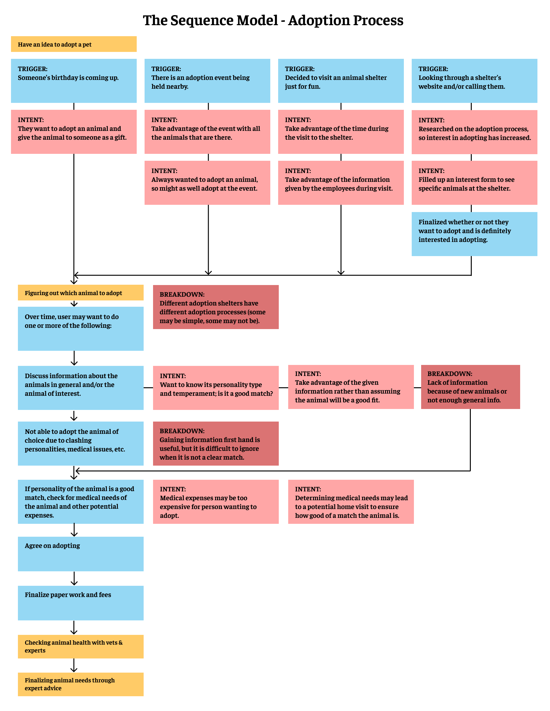
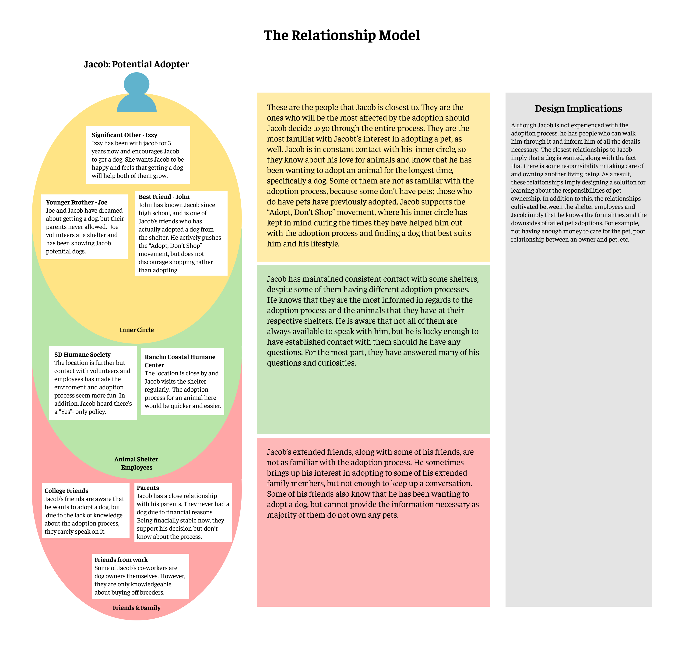
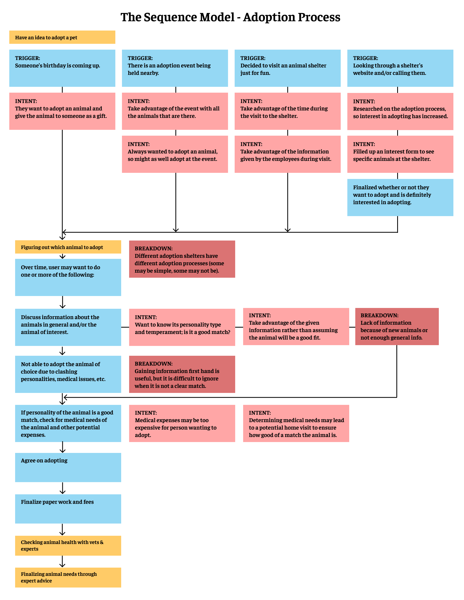

Petential
Team: The Mighty Design Rangers
Team Members: Lillian Lee, Elmer Maldonado, Kelly Mayeda, Lereanne Mendoza, Austin Nim, and Emi Oda
Team Values: Intuitive, Accessibility, Visually Aesthetic, Functional, Efficiency
Role: UX/UI Designer, Researcher
Description: This was a 10 week collaborative design project alongside 5 other UCSD students to examine a design context in order to find real world problems that can be explored through technological and representational opportunites that demonstrate a strong understanding of users and their actions. The context chosen to design within were animal shelters in San Diego, with the goal of improving the well-being of animals located in animal shelters. Initial research revolved around interviews and contextual inquiry to identify notable problems. Once data was gathered, models and diagrams were constructed to illustrate the interactivity between stakeholders and aspects of animal shelters. At the end of the 10 weeks, we were able to construct an interactive website prototype that detailed the functionality of the website.
Design process below

 


